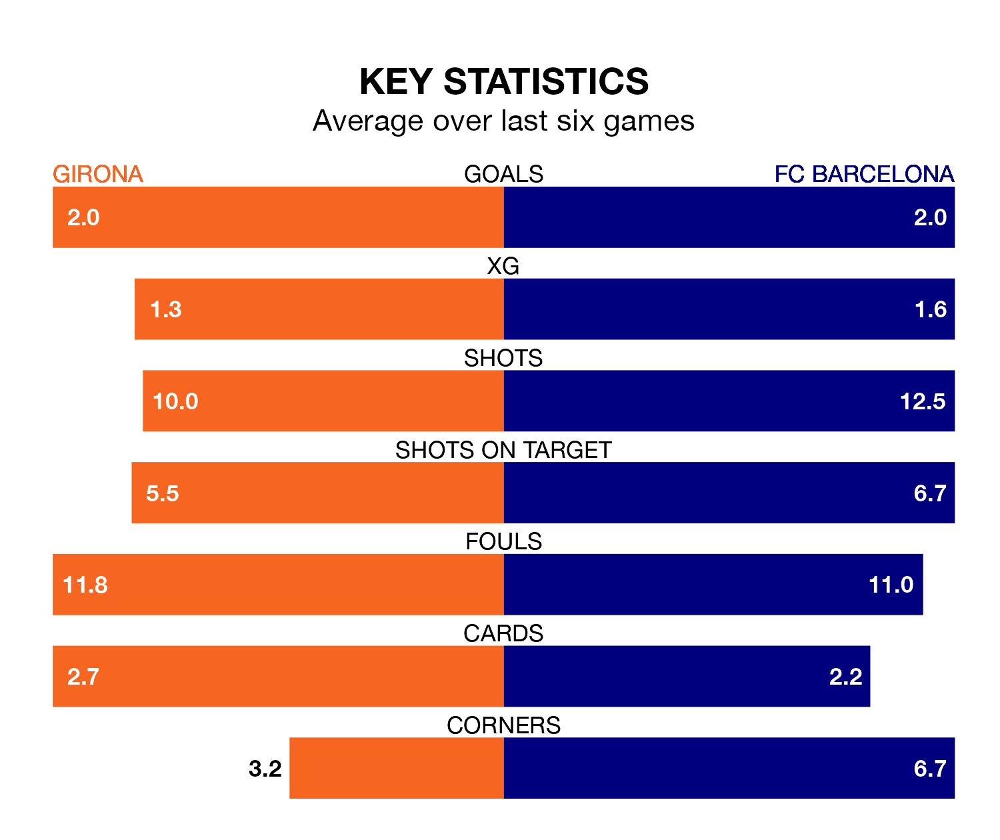

Two of La Liga's top sides face each other at Estadi Municipal de Montilivi in Saturday's late kick-off, when third-placed Girona host second-placed FC Barcelona.
Girona have picked up 22 wins and five draws from 33 games so far this season, and sit two points below the visitors going into the 5.30pm match.
Barcelona, meanwhile, have won 22 and drawn seven, picking up 73 points.
With 69 goals in 33 games so far this season, Girona are the league's second-highest scorers with 2.1 goals per game. And they are conceding fewer than average, letting in 40 goals at a rate of 1.2 per game.
Barcelona are also above average scorers, with 2.1 goals per game, compared to a league average of 1.3. They have conceded 1.2 goals per game.
In Artem Dovbyk, the home team have the league's most on-form striker so far this season. He has notched 19 goals in 31 appearances.
His goal rate of one every 114 minutes is quicker than that of Robert Lewandowski, Barça's top scorer with a goal every 150 minutes, and a total of 16 goals in 30 games.
In the last 10 years, Girona and Barcelona have played each other on seven occasions. Girona won one of them, Barcelona four, and they drew twice.
On average, Girona scored 1.0 goal and Barcelona 2.3 in those matches.
Their last meeting was on December 10, when Girona won 4-2 away.
Girona are in reasonable form in La Liga, with four wins and two losses from their last six games.
With five wins and one loss over that period, the visitors' form is better – they have taken 15 points from 18, compared to Girona's 12.
Girona's last match was on April 27, a 2-0 win against UD Las Palmas, with David López and Dovbyk getting the goals for Girona.
Barcelona beat Valencia CF 4-2 last time out, on Monday, with Lewandowski (three) and Fermín López on the scoresheet.
Updated: 12:00 (UTC), 02/05/24